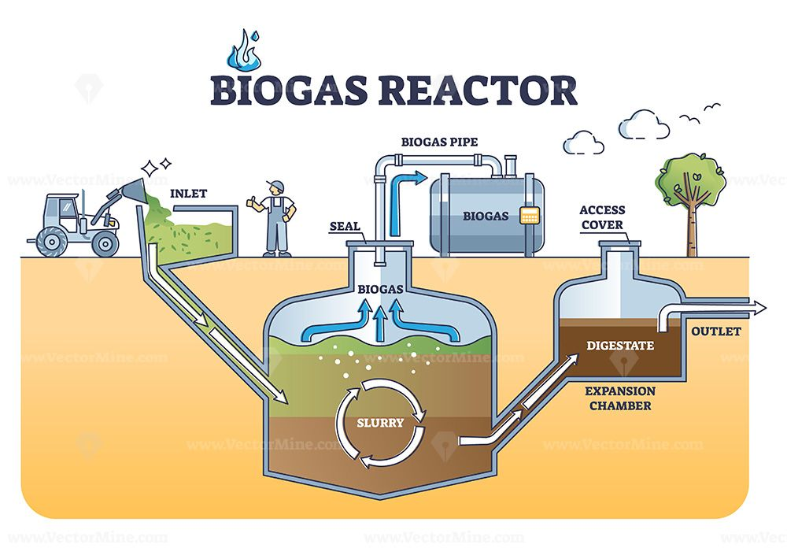

Activity 2: Biomass Biogas System
Design a biomass-based biogas generation system for a dairy farm handling 100 cattle.
System Diagram

Biomass Biogas System Architecture
For this I recommend Fixed-dome digester with an external flexible gas holder.complete system design showing anaerobic digester, biogas collection, and power generation
Key Components Shown:
Cattle Manure Input
Organic waste collection from 100 cattle dairy farm
Anaerobic Digester
Fixed-dome digester with external flexible gas holder
Biogas Storage
Gas collection and storage system for methane-rich biogas
Power Generation
Generator system converting biogas to electricity
Technical Explanations
Source of Energy
The feedstock is fresh cattle manure produced by 100 dairy cows (approx. 1,800 kg/day). Manure contains biodegradable organic matter that microbes convert to methane-rich biogas under anaerobic conditions. Co-substrates (food waste, crop residues) may be added to boost yield.
Conversion Process
Collected manure is pre-screened and mixed with water to form slurry, then fed continuously into an insulated CSTR (mesophilic operation ~35–38°C). Microbial consortia break down organics in the absence of oxygen, producing biogas (CH₄ + CO₂). Gas is collected in a holder, passed through H₂S removal and moisture separation, and conditioned for use. Heat recovered from the CHP or direct biogas burners maintains digester temperature and supplies farm hot-water needs.
Output / Utilization
Generated biogas is used in a combined heat-and-power (CHP) unit to produce electricity for farm loads and heat for digester stability and domestic use; excess electricity can be stored or exported. The digested slurry (digestate) is a nutrient-rich fertilizer.
Real-World Examples
Fair Oaks Farms
Location: Indiana, USA
Capacity: 1.2 MW
A dairy farm with 3,000 cows that generates biogas from manure, powering the entire farm and selling excess electricity to the grid.
Maasai Mara Biogas Project
Location: Kenya
Capacity: Community-scale
Small-scale biogas systems providing clean cooking fuel and electricity for rural communities using cattle manure.
German Biogas Plants
Location: Germany
Capacity: 9,000+ plants nationwide
Germany leads in biogas technology with thousands of plants converting agricultural waste into renewable energy.